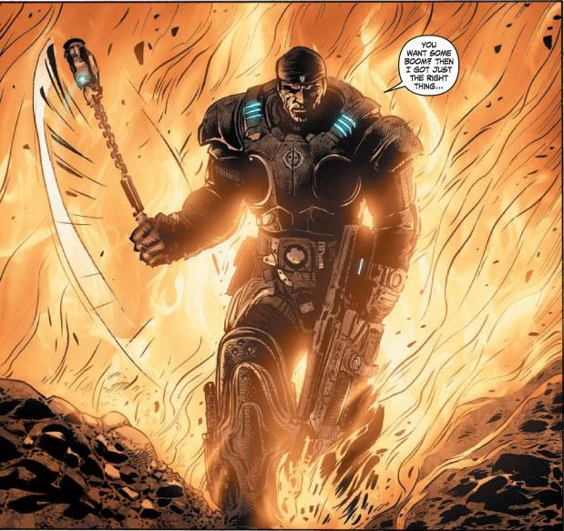
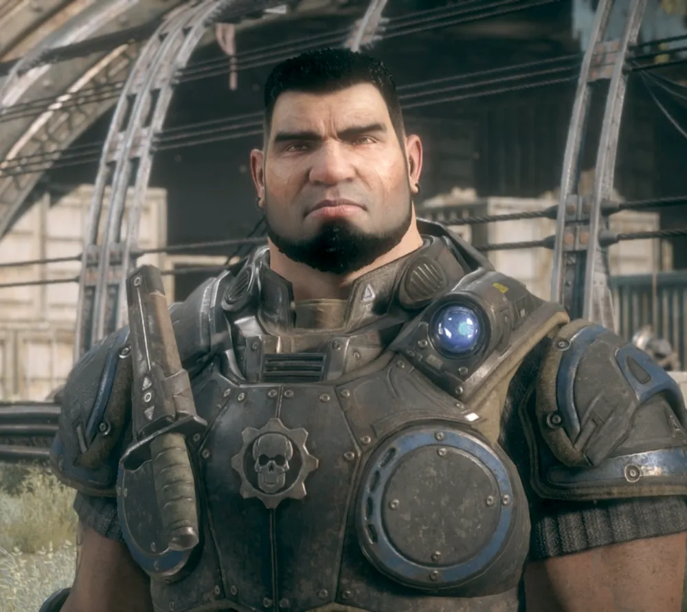
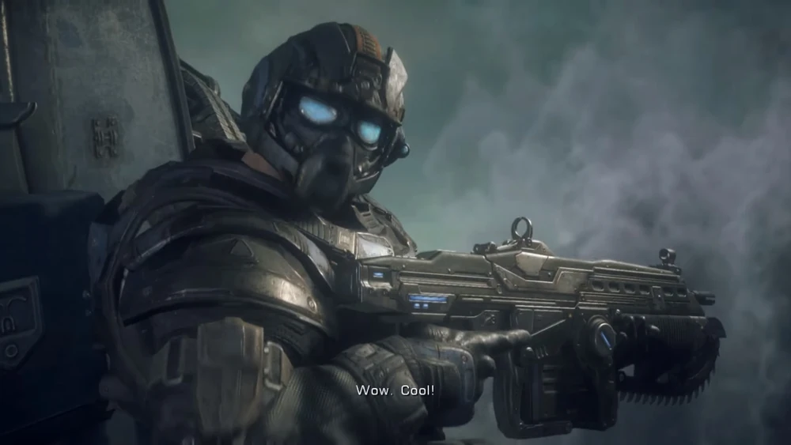

Characters
Marcus Fenix

Sergeant Marcus Michael Fenix (COG tags CSID 293982-3932F-A1) ES is a Gear in the COG Army. Marcus served with distinction in the Pendulum Wars and Locust War, which earned him the Embry Star, the COG's highest military award, for his actions during the Battle of Aspho Fields. Following the Locust Horde invasion on Emergence Day, Marcus defended key cities during the Emergence in Kalona and Destruction of Halvo Bay.
In 10 A.E., Marcus was court martialed for dereliction of duty during the Fall of Ephyra, in which the Locust invaded and occupied Ephyra. Marcus abandoned his post to save his father, Professor Adam Fenix, after receiving a distress message. Marcus failed to rescue his father and the Locust took Ephyra - forcing the COG to relocate to Jacinto City. Marcus was sentenced to forty years at the Jacinto Maximum Security Prison.
After four years, he was pardoned by childhood friend Cpl. Dominic Santiago to join Delta-One during the Lightmass Offensive. Marcus was successful in leading Delta to deliver the Lightmass Bomb and destroy the Outer Hollow. With his reputation restored, Marcus continued fighting against the Locust in Operation: Hollow Storm and was instrumental in the sinking of Jacinto. After the COG relocated to Vectes, Marcus fought against Stranded insurgents and the rising Lambent threat. The COG collapsed in 15 A.E. following Chairman Richard Prescott's abandonment. Marcus, along with other Gears and civilians aboard the CNV Sovereign, attempted to survive until 17 A.E. when Prescott returned with the revelation that Adam Fenix was alive. Marcus led humanity to victory over the Locust and the Lambent by rescuing his father and deploying the Imulsion countermeasure. Find out more...
Dominic Santiago

Private Dominic "Dom" Santiago ES was a Gear in the COG Army during the Pendulum Wars, Locust War, Stranded Insurgency, and Lambent Pandemic. He was the younger brother of Carlos Santiago and childhood friend of Marcus Fenix, both war heroes of the Pendulum Wars. Santiago joined the army as a Commando and took part in Operation Leveler to obtain schematics for the Hammer of Dawn, which would later guarantee victory for the COG but resulted in the death of his brother Carlos. On Emergence Day, Santiago lost both his children. His wife, Maria Santiago, developed PTSD and went missing.
Fourteen years after E-Day, Santiago pardoned Marcus Fenix from Jacinto Maximum Security Prison and recruited him into Delta-One. After finally finding his wife, he was forced to euthanize Maria as she had become a victim of torture by the Locust Horde. Santiago developed depression, but continued to fight during the Stranded Insurgency and Lambent Pandemic. When the COG collapsed following the abandonment of Chairman Richard Prescott, Santiago joined the rest of Delta aboard the CNV Sovereign, serving as a member of a rapid response force that defended former COG communities against the Lambent.
In 17 A.E., Prescott returned from the secret island facility of Azura with the revelation that Marcus Fenix's father, Professor Adam Fenix, was alive and had created the Imulsion Countermeasure Weapon as a solution to the Lambent problem. With Queen Myrrah capturing the island and imprisoning Adam Fenix, Delta began a journey to liberate Azura and Adam Fenix to launch the Imulsion countermeasure and end the Lambent. Santiago sacrificed himself during the Mission to Mercy when the town of Mercy was overrun by Lambent and Locust forces. He destroyed a fuel tank to eliminate the enemy that trapped Delta-One, who managed to survive and reach Azura where the war was successfully ended. Find out more....
Anthony Carmine

Private Anthony Carmine was a Gear soldier in the Coalition of Ordered Governments army and a member of Delta Squad. He was a member of the Carmine Family and the brother of Benjamin Carmine, Clayton Carmine, and an unnamed fourth brother. In 14 A.E., Anthony was part of the mission to find and deploy the Resonator during Lightmass Offensive. He was killed just outside the House of Sovereigns by a Locust Sniper and was remembered as a hero by his family.
Anthony Carmine was born and raised during the last years of the Pendulum Wars. He was the younger brother to Clayton and his second eldest brother. At a certain point, Anthony became the older brother to the youngest of the Carmine family: Benjamin.